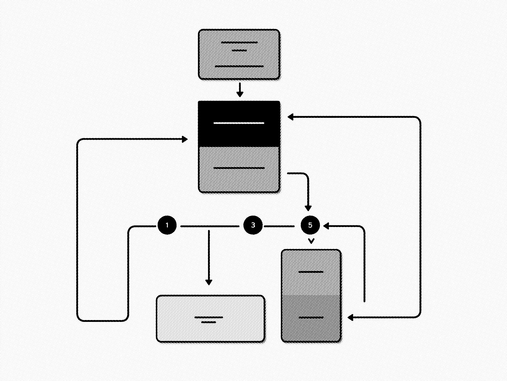

Challenge
Your strategy moves faster than your structure.
Traditional talent models were built for stability, not constant motion.

The Chameleon Bench is a flexible operating model that provides continuous access to embedded senior leaders who adapt to your priorities without the cost or delay of hiring.
Traditional talent models were built for stability, not constant motion.

It is called the Chameleon Bench.
A standing team of senior experts who integrate into your organization and flex as needs change.
Bench leaders operate inside your rhythms, goals, and culture. They are part of the team from day one.
Operators who have carried real responsibility and understand how work drives business performance.
Shift expertise as priorities evolve. No role changes, no re-hiring, no downtime.
One relationship. Transparent structure. No surprises.
The Bench stays with you, compounding knowledge and accelerating impact over time.
We align expertise, priorities, and workflows so the Bench operates as a seamless extension of your organization.
We are accountable to results, not hours or deliverables.
A structured model that builds clarity, installs capability, and evolves with your business.
Your Bench Lead, a seasoned operator, works alongside leadership to articulate priorities, align stakeholders, and translate ambition into a practical path forward. Strategy is grounded in outcomes, informed by experience, and built to move.
A stable core of trusted leaders is established, supported by access to specialized experts across marketing, product, brand, and growth. The team is purpose built for the moment while maintaining continuity over time.
Bench teams embed into how your organization already runs. With dedicated program leadership, structured intake, and transparent reporting, priorities stay clear and performance never goes dark.
The Bench Lead actively monitors progress, surfaces new opportunities, and recalibrates expertise around the core team. Depth increases when needed and recedes when it should, without disrupting momentum.

A durable leadership structure supported by elastic expertise.
Your senior partner and strategic anchor. The Bench Lead aligns priorities, shapes the roadmap, and ensures the right expertise is applied at the right time. They remain the constant as the work evolves.
A small group of trusted operators embedded for the long term. They build institutional knowledge, drive day to day progress, and provide continuity across initiatives.
Specialists who join when their capabilities can accelerate outcomes. From analytics and media to lifecycle, product, or creative, depth expands and contracts without disrupting the foundation.
Behind every Bench is structured coordination. Priorities are aligned, work is tracked, and results are visible so nothing slips between roles.
Built for the moments when expectations rise and capacity does not.
Pipeline, revenue, or efficiency targets moved, but the team did not. The Bench adds senior leadership and execution depth immediately so momentum matches ambition.
New structures, technologies, or ways of working are being introduced while performance still has to deliver. Experienced operators help guide change without slowing the business.
The strategy requires capabilities your current organization was never designed to house. The Bench fills gaps with proven expertise without forcing permanent hires.
New products, categories, or initiatives cannot wait for recruiting cycles. The Bench stands up the right leadership and support to move intelligently and quickly.
Multiple teams and partners are contributing, but ownership is diffuse. The Bench installs senior oversight, clear priorities, and visible performance.
Investment must work harder. The Bench aligns expertise precisely to demand, increasing impact without increasing fixed cost.
Internal leaders are stretched across competing priorities. The Bench adds experienced partners who can own outcomes and move work forward independently.

A durable leadership structure supported by elastic expertise.
Scaled demand for three B2B companies from Series B to exit.
Led performance strategy across multi-channel portfolios exceeding $100M.
Built retention engines for subscription and marketplace businesses, improving LTV and cross sell performance.
Designed scalable infrastructure across complex organizations, connecting data, tooling, and performance.
Led brand transformation initiatives that strengthened market position while accelerating demand.
Translated product innovation into clear market narratives that drove adoption and revenue growth.
Turned fragmented data into executive clarity, enabling smarter investment decisions.
Built retention engines for subscription and marketplace businesses, improving LTV and cross sell performance.
Orchestrated cross functional launches from strategy through execution for global teams.